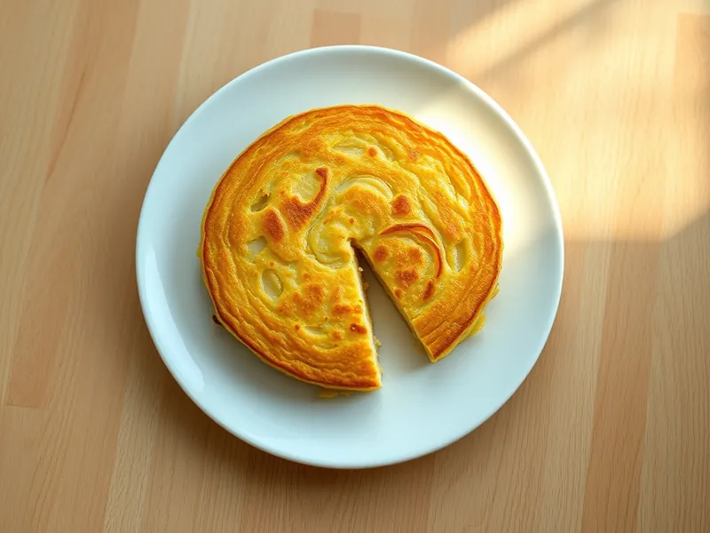

Испанская тортилья с картофелем
Толстый омлет с мягким картофелем и луком, который режут на куски как пирог
30 мин4 порц.374 ккал на порциюБ 13 · Ж 25 · У 24Средиземноморская кухня
Открыть в приложении: порции, таймеры, список покупок
Продукты на 4 порц.
- Картофель4 шт
- Лук репчатый1,5 шт
- Яйцо куриное6 шт
- Оливковое масло4 ст. л.
- Соль1 ч. л.
Как готовить
- Почистите картофель и нарежьте тонкими ломтиками 3 мм, лук тонкими полукольцами.
- Разогрейте масло в сковороде диаметром 22-24 см на среднем огне. Выложите картофель с луком, посолите и томите 12-15 минут, помешивая, пока картофель не станет мягким, но не поджаренным.
- Взбейте яйца со щепоткой соли. Откиньте картофель на сито, масло слейте в чашку, а картофель переложите в яйца и оставьте на 3 минуты.
- Влейте в сковороду 1 ст. л. слитого масла, вылейте яичную смесь и жарьте на слабом огне 5 минут, пока края не схватятся.
- Накройте сковороду большой тарелкой, переверните тортилью на тарелку и сдвиньте обратно сырой стороной вниз. Жарьте ещё 3 минуты.
- Дайте постоять 2 минуты и нарежьте треугольниками. Внутри тортилья должна быть сочной, но не жидкой.
Совет. Картофель надо именно томить в масле на среднем огне: если он покроется корочкой, тортилья получится сухой.